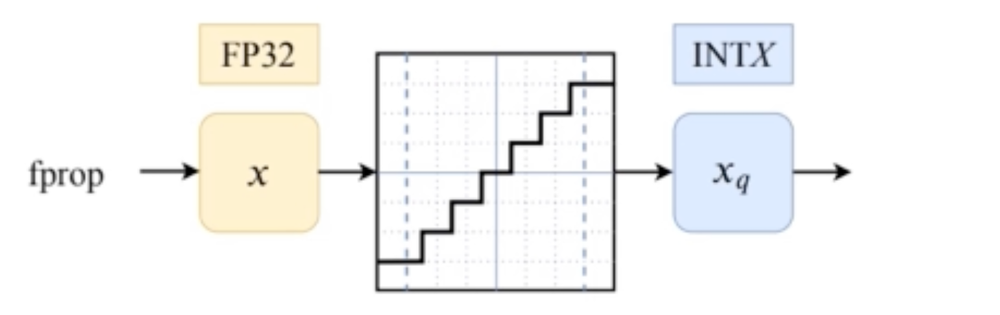
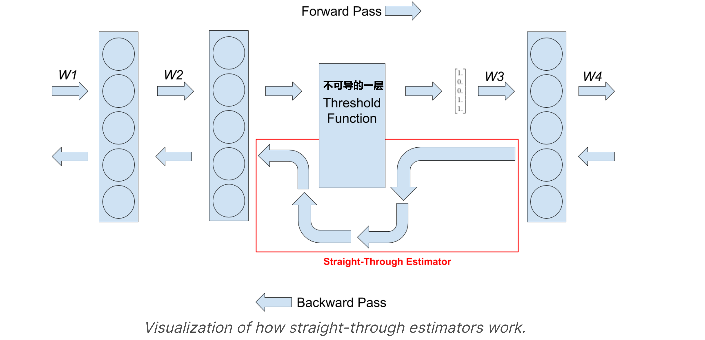
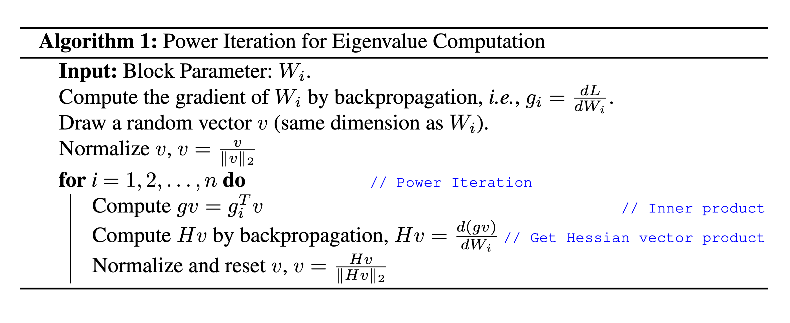
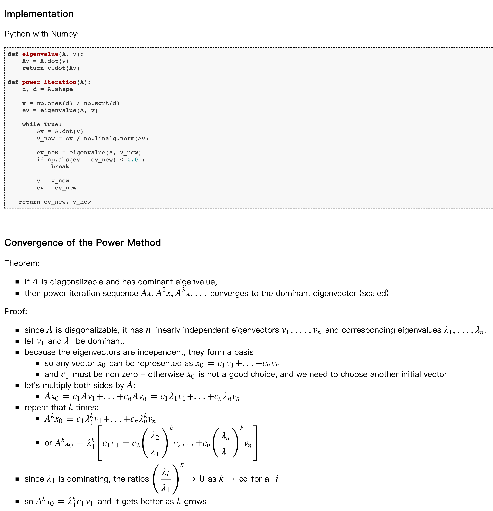
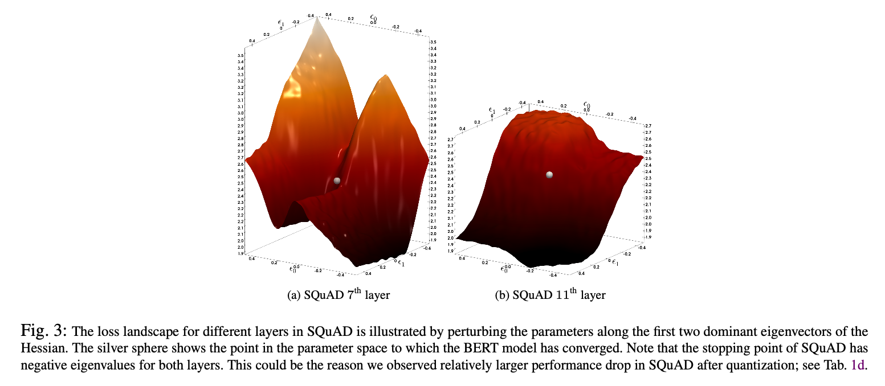
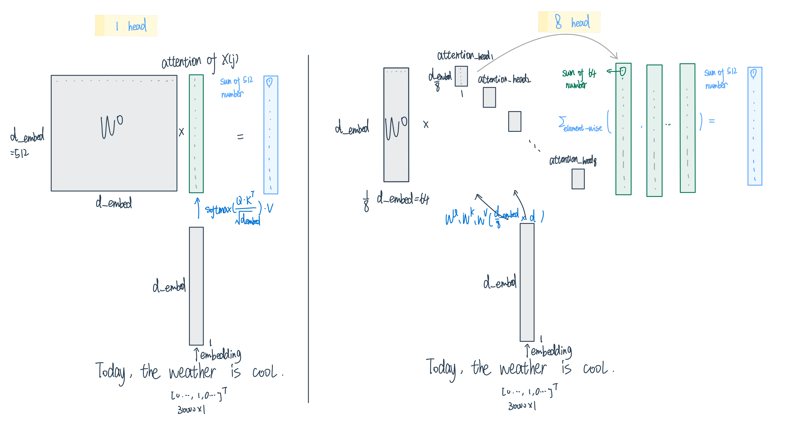

Q-BERT
Contents
Q-BERT¶
效果
Q-BERT achieves 13× compression ratio in weights, 4× smaller activation size, and 4× smaller embedding size, within at most 2.3% accuracy loss.
研究贡献：
mixed precision quantization based on Hessian information——对二阶信息（即 Hessian 信息）进行大量逐层分析，进而对BERT执行混合精度量化。研究发现，与计算机视觉领域中的神经网络相比，BERT的Hessian 行为存在极大的不同。因此，该研究提出一种基于top特征值均值和方差的敏感度度量指标，以实现更好的混合精度量化。
the group-wise quantizing scheme——研究者提出新的量化机制——组量化（group-wise quantization），该方法能够缓解准确率下降问题，同时不会导致硬件复杂度显著上升。具体而言，组量化机制将每个矩阵分割为不同的组，每个组拥有独立的量化范围和查找表。
研究者调查了BERT量化中的瓶颈，即不同因素如何影响NLP性能和模型压缩率之间的权衡，这些因素包括量化机制，以及嵌入、自注意力和全连接层等模块。
核心方法¶
对于一个fine-tuned的BERT：损失函数是
CE：Cross Entropy或者其他合适的loss function
BERT三类主要的layers：
最内层的\(W_e\)是embedding table，\(BERT_{BASE}\)中需要91MB.
外面的\(W_{1}, W_{2}, \ldots, W_{n}\)是Encoder层，\(BERT_{BASE}\)中需要325MB
\(W_{c}\)是output layer，\(BERT_{BASE}\)中需要0.01MB.
QBERT没有量化output layer，而是用两种不同的方法量化embedding和Encoder的parameters
量化¶
如果把一个NN中的activation或者权重real value \(z\)用quantization operator \(Q\)来量化的话，那么对每一个在 \((t_{j}, t_{j+1}]\) (\(j=0, \ldots, 2^{k}-1\)，k是这一层的quantization precision)这个区间的\(z\)来说，都会映射到一个固定的数\(q_j\)，也就是： $\( Q(z)=q_{j}, \quad \text { for } z \in(t_{j}, t_{j+1}] \)$
Uniformly quantization function: \((t_{j}, t_{j+1}]\)这个区间的大小都是一样的，QBERT用的也是这种方法
整体来说，QBERT实现的是一个非对称的quantization-aware fine-tuning，属于之前提到的QAT但是是在fine-tune的阶段实施的：
在前向传播的过程里，对每一个weight或者激活函数tensor \(X\)中的每一个element都采取
- \[X^{\prime}=\operatorname{Clamp}(X, q_{0}, q_{2^{k}-1}) \]
Clamp(X, min, max)这个函数的意思是把a里面比b小的设成b，比c大的设成c
这一步之后得到的\(X^{\prime}\)相当于是被clip到了\([q_{0}, q_{2^{k}-1}]\)这个范围里面
通常这个范围是[min, max]的一个subinterval，这样做的目的是get rid of outliers and better represent the majority of the given tensor
- \[X^{I}=\lfloor\frac{X^{\prime}-q_{0}}{\Delta}\rceil, \text { where } \Delta=\frac{q_{2^{k}-1}-q_{0}}{2^{k}-1} \]
\(\lfloor · \rceil\): 取整函数
\(\Delta\): 两个quantized的点的距离
这个function得到的\(X^{I}\)相当于减掉了\(X^{\prime}\)的最小值之后算离最小值多少个interval，然后再被取个整，得到的matrix就是一个整数矩阵了！
- \[DQ(X)=\Delta X^{I}+q_{0}\]
这是原文写的是Q，但说了是一个dequantization oepration，会把之前的float再次映射回到pre-trained好的网络熟悉的值域!
经过这三个步骤之后，这个Q DQ的block的输出大概是这么一回事：
 然而问题来了，这样的activation输出根本没有梯度可言呀！
所以，在back-propagation的时候我们要用Straight-through Estimator（STE）方法绕过这一层activation！实现一个“Fake quantization forward and backward pass”的错觉让其他层正常去训练
A straight-through estimator is exactly what it sounds like. It estimates the gradients of a function. Specifically it ignores the derivative of the threshold function and passes on the incoming gradient as if the function was an identity function.
 那么Intuition很简单，我们把刚刚对一个层的\(w\)变成\([w_{min}, w_{max}]\)之间的integer的这个过程记为\(w \rightarrow \hat{w}\)，那么对这个不可导的forward layer，我们只需要把它原先到处不可导的导数\(\frac{\partial \hat{w}_{L}}{\partial w_{L}}\)给直接设成1，它就不影响chain rule上的其他back probagation了！
但唯一要注意的细节是，反传回来的梯度是有可能在我们之前设定的\([w_{min}, w_{max}]\)范围之外的，对于这部分的情况我们之间不更新参数，所以导数直接设成0！
整理效果来看，由于\(\frac{\partial \hat{\boldsymbol{w}}_{L}}{\partial \boldsymbol{w}_{L}} \approx 1\)，让\(\frac{\partial \mathcal{L}}{\partial \hat{w}} \approx \frac{\partial \mathcal{L}}{\partial w}\) 是没什么问题的！
Forward和Backward的整体效果用Towards Energy-efficient Quantized Deep Spiking Neural Networks for Hyperspectral Image Classification这篇paper里的一张图表示就是：
Mixed precision quantization¶
Motivation¶
Ultra low precision quantization can lead to significant accuracy degradation. Mixed precision quantization and multi-stage quantization have been proposed to solve/alleviate this problem.
Mixed precision quantization的问题：指数化的搜索空间，比如我们可以对一个12层的BERT做2、4、或者8bit的三种量化，那么就一共有\(3^{12} \approx 5.3 \times 10^{5}\)种不同的量化方法！
Different encoder layers are attending to different structures, and it is expected that they exhibit different sensitivity. Thus, assigning the same number of bits to all the layers is sub-optimal. However, a brute force approach is not feasible for deep networks, as the search space for mixed-precision is exponential in the number of layers!
比如从下面这张图展示了4个不同的fine-tuned之后的BERT层的Loss Landscape
解释：
x, y 坐标是二阶导组成的Hessian矩阵中，特征值最大的两个特征向量
z轴是这一层的loss function
灰色小球是converge的地方，这里注意QBERT假设 在进行quantization之前的 fine-tuned后BERT已经跑了足够的iterations达到了local minima，因此梯度接近0，并且有正的curvature（positive Hessian eigenvalue）
这个假设
x y的变化⇒z的变化，可以近似weight变化⇒loss的变化，也就是损失函数对weight的sensitivity
从这张图可以观察出来：每一层的sensitivity差别很大，如果对(a)的层动一点weight的话，loss会迅速increase，而对最后一层很flat的来说，由于它非常不sensitive所以我就算动了很大的weight，loss也不会偏离converge的地方非常远
这就提示我们在后面的层可能可以采用更激进的策略，比如2 bit，也不会损失很大的accuracy，但有些敏度高的地方，就不能这么操作！
因此，我们不能采取统一的策略，特别是我们最终的目标model很小、需要我们进行ultra low precision (4-bits、2-bits)的时候。我们需要的策略是：assign more bits to more sensitive layers in order to retain performance.
Hessian AWare Quantization (HAWQ)¶
HAWQ是QBert伯克利lab的另外一篇用在Image上的量化方法，QBERT就是改进了HAWQ方法并应用在了BERT上。因此我们简单介绍一下HAWQ！
HAWQ定义了一个叫Hessian spectrum，其实就是矩阵的top eigenvalues！核心思想是NN layers with higher Hessian spectrum (i.e., larger top eigenvalues) are more sensitive to quantization and require higher precision, as compared to layers with small Hessian spectrum (i.e., smaller top eigenvalues).
这个方法的思路很简单，但对于非常高维度的矩阵，显式求特征值有求逆的过程是不可能的，比如一个 \(\text {BERT}_{\text{BASE}}\)有7M个参数，特征值就需要解\(7 M \times 7 M\)的矩阵！Although it is not possible to explicitly form the Hessian, it is possible to compute the Hessian eigenvalues without explicitly forming it, using a matrix-free power iteration algorithm to calculate Hessian matvec —— the result of multiplication of the Hessian matrix with a given (possibly random) vector v , that is, \(H_{i} v\).
Denote \(g_{i}\) as the gradient of loss \(L\) with respect to the \(i^{t h}\) block parameters, $\( g_{i}=\frac{\partial L}{\partial W_{i}} \)$
Then, for a random vector \(v\) (which has the same dimension as \(g_{i}\) ), we have:
\[\begin{split}\begin{aligned} \frac{\partial(g_{i}^{T} v)}{\partial W_{i}} &=\frac{\partial g_{i}^{T}}{\partial W_{i}} v+g_{i}^{T} \frac{\partial v}{\partial W_{i}} \quad \text{// Product Rule} \\ &=\frac{\partial g_{i}^{T}}{\partial W_{i}} v \quad \text{// $v$ is independent of $W_i$} \\ &=H_{i} v \end{aligned} \end{split}\]接着就可以使用Power Iteration算法来得到最大的特征根和特征向量
 \(i\)是迭代的轮次，一共跑n个iteration
当我们对\(gv\)求导的时候，其实是给\(v\) 乘了一个\(H\)，随着这个H越乘越多，\(v\)就会converge to dominate eigenvector. 这其实是数值代数的一种方法！可以看这里

有了这个方法之后，对每一层来说，我们training data，我们都可以算出一个Heissian matrix并且计算得到top eigenvalues，而之前的方法就是把这些top eigenvalues做一个平均形成准则——More aggressive quantization is performed for layers with smaller top eigenvalue.
QBERT的改进¶
QBERT发现，assigning bits based only on the average top eigenvalues is infeasible for many NLP tasks，比如对BERT进行这个过程求得的特征值会发现：The distribution of top Hessian eigenvalue for different layers of \(\text {BERT}_{\text{BASE}}\) in different layers exhibit different magnitude of eigenvalues even though all layers have exactly same structure and size.
比如上面这张图SQuAD的第七层的variance是61.6，但均值是1.0！尽管这个variance是10个 10%数据计算出来的特征值 得到的！
那么Bert提出的方法是这样的
判断准则：再加上这个top eigenvalues的标准差！ $\(\Omega_{i} \triangleq\left|\operatorname{mean}\left(\lambda_{i}\right)\right|+\operatorname{std}\left(\lambda_{i}\right)\)$
\(\lambda_{i}\)是第i层的weight的\(H_{i}\)的最高值 组成的向量（因为数据被分成了10份来算 所以有10个 top eigenvalues）
有了这个准则之后就可以比较了：sort them in descending order, and we use it as a metric to relatively determine the quantization precision. We then perform quantization-aware fine-tuning based on the selected precision setting.
但文中并没有详细给出这些\(\Omega_{i}\)的具体数值，只在最后给出了他们在用2/3 bit mixed precision 以及 2/4-bit mixed precision的具体方案：
注意Embedding layer因为作者发现embedding layer is more sensitive to quantization than the encoder layers.
SQuAD没有达到local minima的问题¶
注意，这里作者还提出，SQuAD在fine-tuned的过程里没有达到local minimum，因为Hessian矩阵不是正定的。
一般来说：before performing quantization the trained model has converged to a local minima!也就是已经跑了足够的迭代了
达到local minima的话有两个条件：necessary optimality conditions are zero gradient以及positive curvature（positive Hessian eigenvalue)，但是这里
然而，SQuAD has actually not converged to a local minima!
 从这张图也可以看出来：SQuAD的fine-tuned BERT是converge在了saddle point点上！
因此，接下来的方法that performing quantization on SQuAD would lead to higher performance degradation as compared to other tasks, and this is indeed the case as will be discussed next.
Group-wise Quantization 组量化¶
Why we need to quantize by group?¶
在介绍这部分之前，原论文将attention中进行了一个reparametrization
主要区别点：
Transformer中的self-attention中，h个head计算完输出h个\(n \times \frac{d_{embedding}}{h}\)的concat起来变成\(d_{embedding} \times d_{embedding}\)
再乘一个\(d_{embedding} \times d_{embedding}\)的\(W_O\)
QBERT中：每个head中n维向量的每个单词计算完\(\frac{d_{embedding}}{h} \times 1\)的attention output后，直接用一个\(d_{embedding} \times \frac{d_{embedding}}{h}\)的\(W_O\)左乘attention output得到这个单词j在head i上的Attention: \(Att_i(x, x(j))\)
左乘一个缩小版的\(W_O\)的过程，相当于把原先1-head的时候\(d_{embedding}\)个数相加得到最后输出，变成了只有\(\frac{d_{embedding}}{h}\)个数相加，所以最后的输出我们需要把8个head得到的结果element-wise相加，示意图：

那么现在这个公式应该就会亲切许多啦：
对于输入向量\(x=(x(1), \ldots, x(n))^{T} \in \mathbb{R}^{n个单词 \times d(768)个embedding维度}\)的每个单词\(x(j)\), 一个attention的输出：
\[ \operatorname{Att}(x, x(j)) = W_{o} \sum_{i = 1}^{n} \operatorname{softmax}(\frac{x(j)^{T} W_{q}^{T} W_{k} x(i)}{\sqrt{d}}) W_{v} x(i)\]\(\text {BERT}_{\text{BASE}}\) 中：embedding 维度 d = 768, head的数量\(N_{h}\)=12
\(V^{i}=W_{v} · x(i) \) 的维度 ：\( (\frac{d}{N_{h}}, d) \times (d, 1)\)=\( (\frac{d}{N_{h}} ,1)\)
\(K^{i}=W_{k} · x(i) \) 的维度 ：\( (\frac{d}{N_{h}}, d) \times (d, 1)\)=\( (\frac{d}{N_{h}} ,1)\)
\({Q^{j}}^{T} =x(j)^{T}·{W_{q}}^{T} \) 的维度 ：\( (1, d) \times (d,\frac{d}{ N_{h}}) \)=\( (1, \frac{d}{N_{h}} )\)
j在i上的scaled Attention score 权重 \(\operatorname{softmax}(\frac{x(j)^{T} W_{q}^{T} W_{k} x(i)}{\sqrt{d}})\)的维度：\( (1, \frac{d}{N_{h}} ) \times (\frac{d}{N_{h}} ,1) \)=一个数字
所以最后的加权平均输出是跟\(K^{i}\)维度相同的\( (\frac{d}{N_{h}} ,1)\)
再经过一个“不完全的multihead 输出加总矩阵”\(W_{o} (d, \frac{d}{N_{h}})\) 的左乘，得到的\(W_{o} \times\) attention score weight sum of \(K^{i}\)的维度就是 \( (d, \frac{d}{N_{h}}) \times (\frac{d}{N_{h}} ,1) = (d, 1)\)的输出了
接着我们再把12个head的结果给加起来：
\[\sum_{i=1}^{N_{h}} \operatorname{Att}_{i}(x, x(j))\]就得到输出了！
相当于12层Encoder中，每一层的multihead-self attention的计算过程有4个matrix × 12个head ×每个head \(\frac{768}{12}=3072\)个神经元（每个矩阵做个事情可以理解为一个neuron），一共有2M个parameters，如果直接用一样的range去做quantize的话就会严重degrade accuracy！
How to¶
为了解决这个问题，Bert提出了 group-wise quantization for attention-based models
一个head一组分成12组——Treat the individual matrix W with respect to each head in one dense matrix of MHSA as a group so there will be 12 groups:
每个head组中，再bucket sequential output neurons together as sub-groups, e.g., each 6 output neurons as one sub-group，这样总共的sub-group数量是：
12个head × \(\frac{每个head中每个矩阵有\frac{768 维 embedding}{12个head} = 64列\text{乘}W_o\text{前的attention output}}{6\text{个output neuron一组}}\)= 128个sub-groups
Each sub-group can have its own quantization range.
value matrix \(W_v\)的quantization过程（concatenate \(N_{h}\) value matrix \(W_{v}\) to be a 3-d tensor)：

Layer-wise quantization: entire \(3-d\) tensor will be quantized into the same range of discrete numbersGroup-wise without sub-group: A special case of group-wise quantization is that we treat each dense matrix as a group, and every matrix can have its own quantization range.General case of group-wise: partition each dense matrix with respect to output neuron, and we bucket every continuous \(\frac{d}{2 N_{h}}\) output neurons as a group. The effect of finer group-wise quantization is further investigated in Sec. 4.2.
结果¶
Baseline：BERT
Baseline of BERT quantization - Direct quantization (DirectQ), i.e., quantization without mixed-precision and group-wise quantization as a baseline